¡Que los láseres no te quemen el sensor!
Un arcade para navegador sobre el oficio más sufrido de la noche: sos el fotógrafo de la fiesta, tenés pocas fotos en la tarjeta y un DJ que no para de prender láseres.
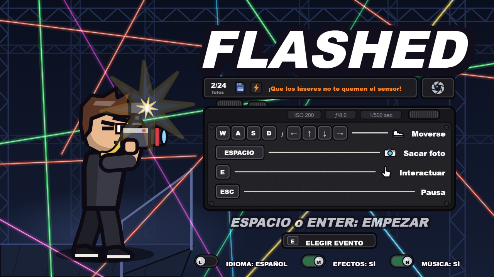
En cada evento te contratan para lo mismo: volver con las fotos que importan. El problema es que quien maneja las luces disfruta demasiado de sus láseres, y cada haz que te toca quema una parte del sensor de tu cámara.
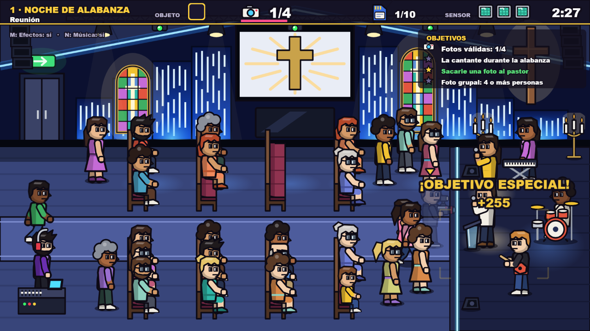
Un flash a tiempo: objetivo cumplido. Arriba, las fotos que quedan en la tarjeta, el estado del sensor y los objetivos del evento.
El marco en el piso muestra qué va a salir. Importa quién entra en la foto y cuándo la sacás.
Cada evento pide tres fotos clave: un momento, un protagonista, una grupal. Sin las tres no te vas.
Diez disparos en la tarjeta y tres impactos de láser de margen. Se acaba cualquiera de los dos y perdés el trabajo.
Partidas de dos a tres minutos, reglas que se entienden en la primera pantalla y dificultad que sube evento a evento. Pensado para jugar un rato desde el navegador, sin instalar nada ni crear una cuenta.
Y con mucho guiño para cualquiera que haya trabajado alguna vez con una cámara en una fiesta.
Cada uno tiene su salón, su gente, su música y sus momentos. De uno al siguiente hay menos tiempo, más movimiento y láseres más seguidos.
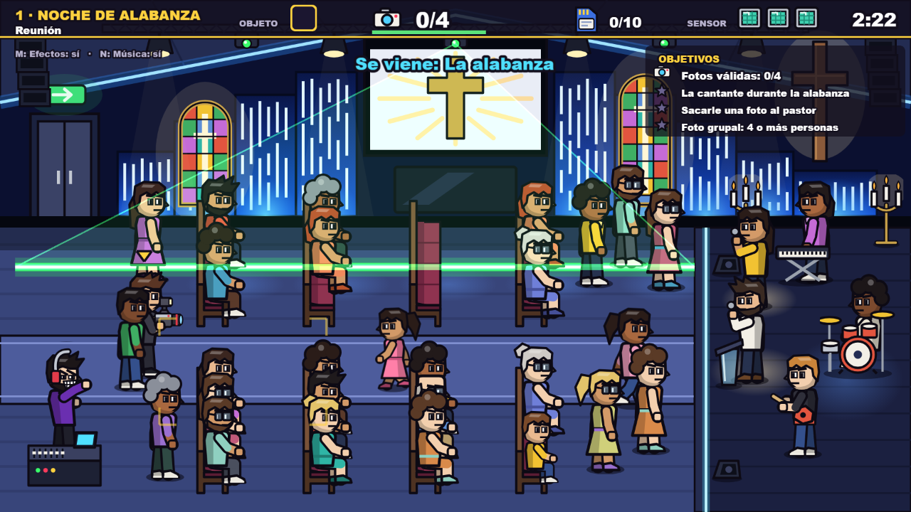
Iglesia moderna con banda en vivo. Los primeros láseres, lentos y con aviso largo. Música de órgano.
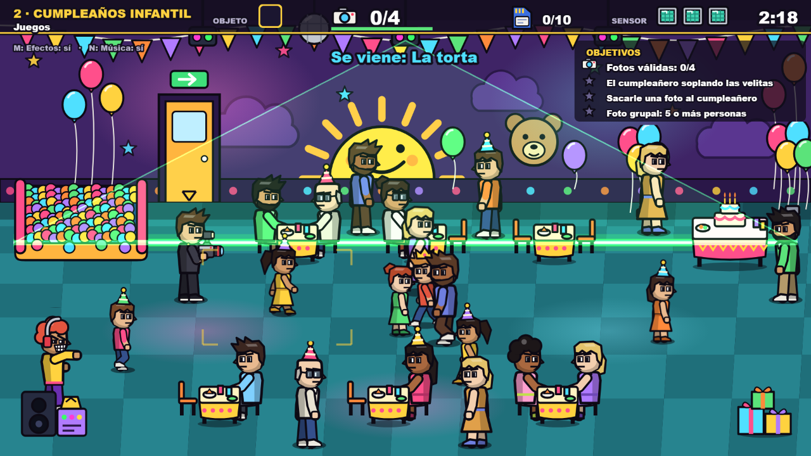
Chicos corriendo por todos lados y un cumpleañero que no se queda quieto. Cajita de música.
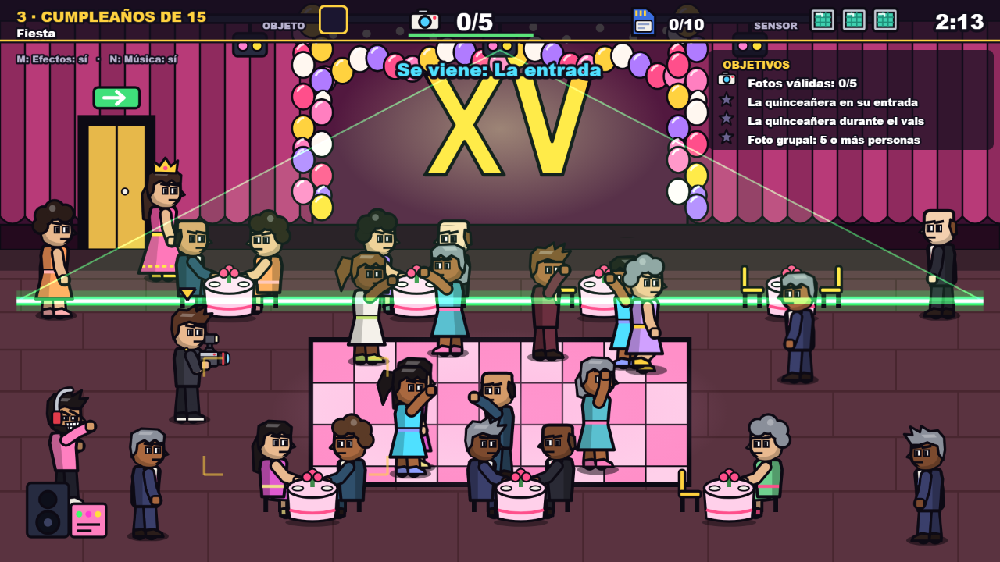
Salón de gala, pista en el centro y dos momentos que no se repiten fácil: la entrada y el vals. Reguetón.
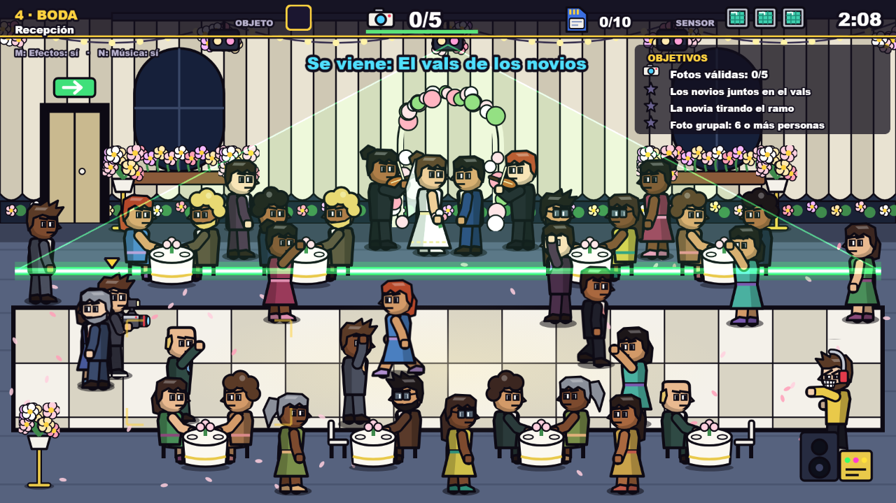
Mesas por todas partes, violinistas y poco lugar para pasar. Los momentos de los novios duran poco. Vals.
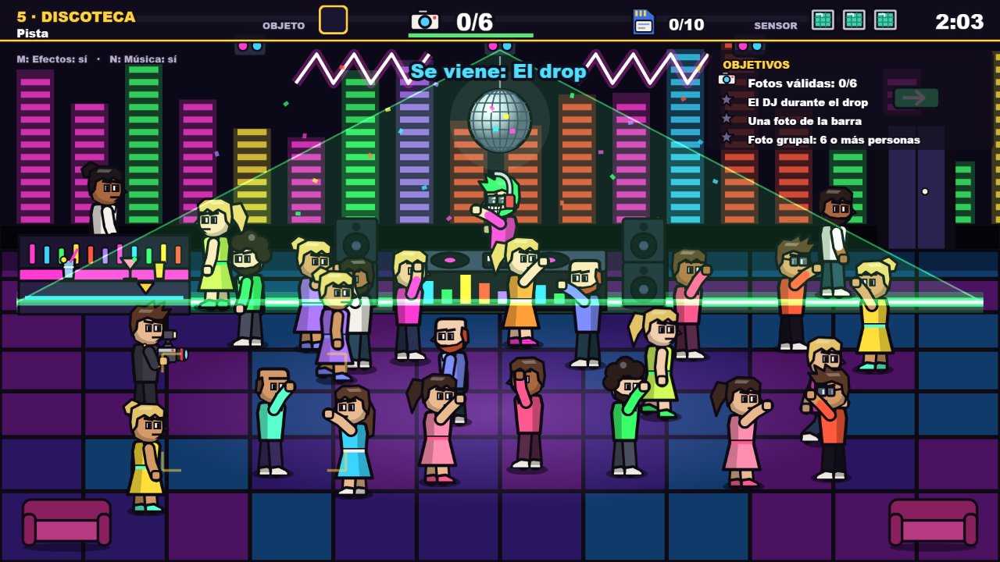
La noche arranca tranquila y se va cargando: tres tandas de láseres cada vez más densas. House.
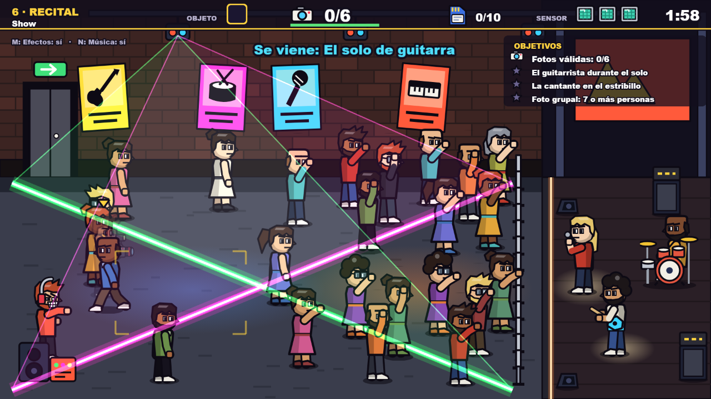
Público apretado contra la valla y los patrones más exigentes antes del final. Rock.
El responsable de todos los láseres. Él ataca con luces; vos, con flashes.
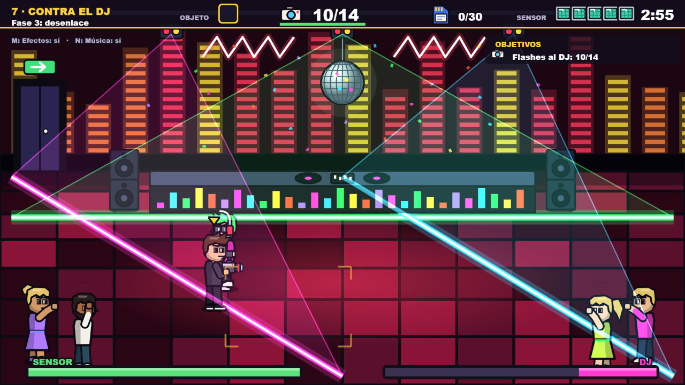
Cada trabajo terminado te deja elegir uno entre tres. Te lo quedás para el resto de la partida, así que cada recorrido se arma distinto.
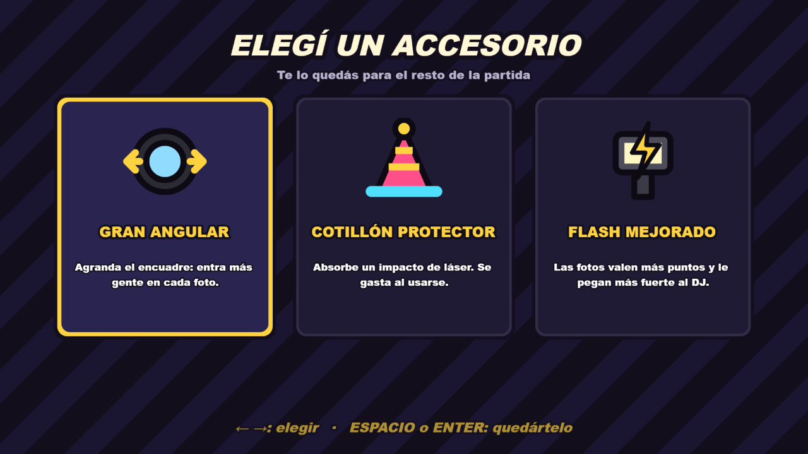
| Cotillón protector | Absorbe un impacto de láser. |
| Bebida para el DJ | Lo distrae y apaga los láseres unos segundos. |
| Flash mejorado | Más puntos por foto y más daño al DJ. |
| Gran angular | Entra más gente en cada foto. |
| Zapatillas | Te movés más rápido. |
| Correa de cámara | Menos espera entre fotos. |
| Tarjeta extra | Cinco disparos más. |
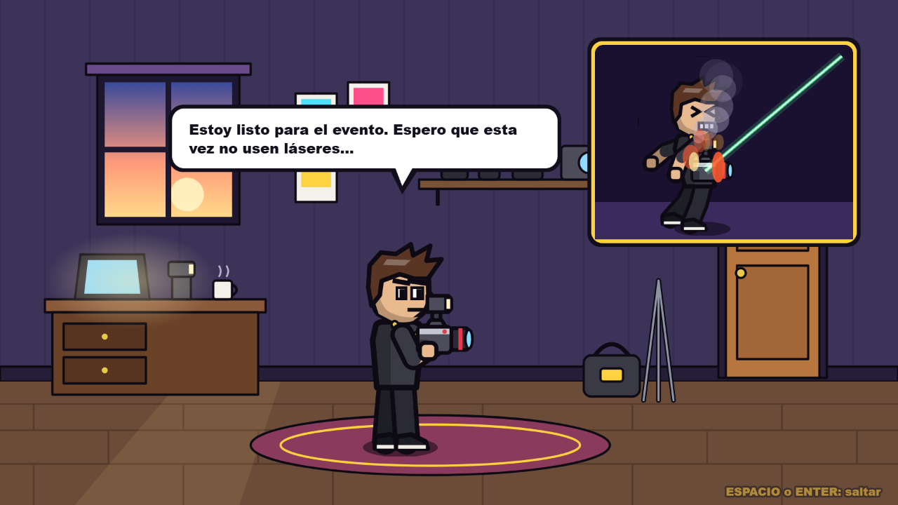
Antes de salir: «Espero que esta vez no usen láseres…»
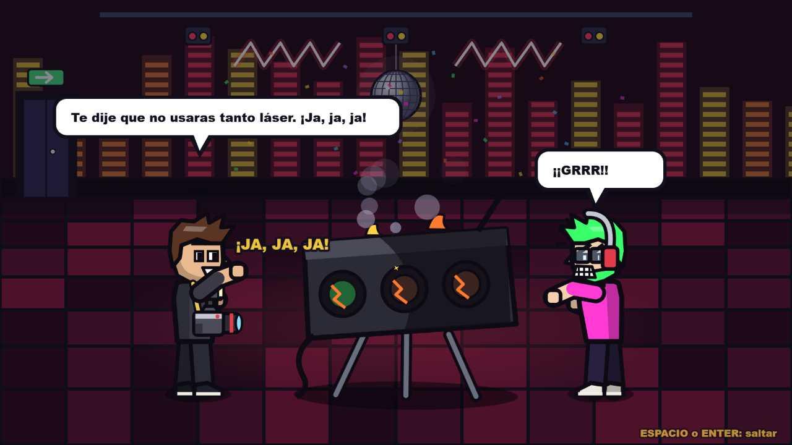
Después del jefe: la máquina fundida y el DJ furioso.
Un solo juego que se adapta a la pantalla y al control que tengas a mano. Se abre desde un enlace: no hay nada que instalar.
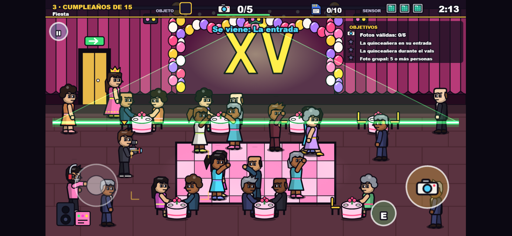
En el celular: palanca a la izquierda, botón de cámara a la derecha. Si lo tenés en vertical, el juego te pide girarlo.
| Computadora | Teclado: WASD o flechas para moverse, Espacio para la foto, E para salir. El menú también responde al mouse. |
| Celular y tablet | Controles táctiles en pantalla y todas las pantallas responden al toque. Se acomoda solo al girar el dispositivo. |
| TV y consola | Con mando: palanca o cruceta, A para la foto, B para salir, Start para pausar. Con control remoto: flechas, botón central y 0. |
| Género | Arcade de acción, un jugador |
| Duración | 2 a 3 minutos por evento |
| Plataforma | Navegador web |
| Peso | Menos de 2 MB, sin descargas adicionales |
| Conexión | Solo para abrirlo |
| Datos | No pide cuenta ni recopila información |
| Idiomas | Español e inglés |